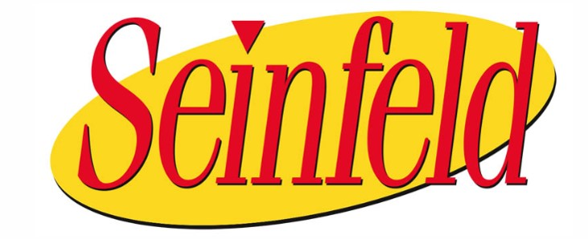

백만장자의 MBTI를 알면 나도 부자 될 수 있을까?
아래 이미지를 눌러 자세한 내용을 확인하세요!
×
직업 : 기업가/투자자
출생년도 : 1964년
국적 : 미국
제73대 타임 올해의 인물 (1999년)
본인이 가장 존경하는 CEO는 워렌 버핏
신중한 선택, 과감한 도전, 성공을 위한 인내
그리고 얻어진 결과를 다시 미래를 위해 투자하는 전략
‘장기적 성장과 시장 확대’라는 원리 원칙을 고수하다
금융권의 유망주였던 베조스는 ‘앞으로 매년 인터넷 이용자는 23배씩 급증할 것이다’라는 기사를 접한 후 인생의 전환점을 맞이한다.
기하급수적으로 증가하는 인터넷 사용자를 상대로 ‘무엇인가’를 하는 것은 어떨까라고 생각한 제프 베조스는 실행에 옮기기로 결심한다.
1995년 아마존의 첫 인터넷 상거래 아이템은 서적.
이후 CD, DVD를 비롯해 각종 소프트웨어, 의류 등으로 확장되었다.
2년 간 적자를 면하지 못했지만 그는 장기적 성장과 시장 확대에 무게중심을 두고 있었기 때문에 동요하지 않았다.
이후 그의 전략이 성공하며 2004년 매출 70억 달러를 기록했다. 전 세계 전자상거래 시장 1위였다
그리고 2007년 전자책 ‘킨들＇이 출시되마자 시장을 석권했지만 강력한 경쟁자 애플의 아이패드가 등장한다.
전자책은 물론, 동영상, 메일 등 다양한 콘텐츠로 무장한 아이패드는 태블릿 선풍을 불러일으키며 단숨에 킨들의 자리를 대신했다.
제프 베조스는 실망하지 않고 새로운 승부수를 던졌다. 태블릿 기능으로 무장한 새로운 킨들의 가격을 아이패드의 절반으로 책정한 것.
199달러짜리 킨들 태블릿은 이내 시장에서 아이패드를 추격했다.
베조스의 전략은 여전히 당장의 이익 추구에 있는 것이 아닌 시장의 개척과 확대였다.
제프 베조스의 리더십은 다방면에서 그 위력을 발휘했다.
그의 모태인 아마존은 한때 물건을 팔면 팔수록 적자를 보는 구조로
미국 금융사들의 경고장을 받았지만 제프 베조스는 이에 굴하지 않았다.
그는 이익을 적게 보는 구조를 확장의 계기로 받아들였고 이내 ‘킨들 언리미티드 서비스’, ‘아마존 프라임 서비스’와 같은
시장친화, 소비자친화형의 상품을 내놓으면서 시장 지배력을 더욱 확장해나갔다.
이 결과 2016년 아마존은 약 8000만 명의 회원을 확보해 충성도 강한 시장을 형성했다.
‘신중한 선택, 과감한 도전, 성공을 위한 인내 그리고 얻어진 결과를 다시 미래를 위해 투자하는 전략’이
바로 제프 베조스의 아마존이 20년 만에 세계의 전자상거래 시장을 석권한 비결인 것이다.
투자가를 위한 추천 강의 바로가기
×
직업 : 프로 골퍼
출생년도 : 1975년
국적 : 미국
2019년 기준 PGA 투어 통산 82승(역대 1위 타이 기록), 메이저 대회 15회(역대 2위 기록) 우승
2019년 기준 PGA 투어 통산 상금 1억2천만 달러
2020년 기준 가장 돈을 많이 번 현역 운동선수
타고난 재능을 가졌음에도 끊임 없는 연습을 했고, 연습 자체를 즐겼다.
기적 같은 결과는 연습에서 나온다
어느 TV프로그램에서 타이거 우즈의 비결을 밝힌다고 했을 때 많은 사람들이 큰 기대를 가지고 지켜봤었다. 하지만 사람들은 방송을 보고 난 후 많은 실망을 했다고 한다. 타이거 우즈가 "골프에는 지름길이 없다"라고 말했기 때문이며, 한마디로 비결이 없다는 것이었다. 타고난 재능을 가진 타이거 우즈도 공의 방향과 미세한 변화를 알아내기 위해 수천, 수만개의 공을 날리며 끊임없이 연습했다고 한다. 실제로 한 메이저 대회에서, 모두가 할 수 없을 것이라는 상황에서 훌륭한 퍼팅으로 우승을 했을때 많은 사람들은 기적이라고 했지만, 우즈 본인은 기적이 아니라 연습의 결과라고 인터뷰를 한 적이 있었다. 그는 언젠가는 필요할 것이라고 생각해 그와 비슷한 상황에서 2~3달 동안 연습해왔다고 하다. 만약 연습이 없었다면 기적 같은 일도 없었을 것이다.
숨막히는 접전 상황에서도 흔들림 없는 결과를 만들어내는 집중력
저명한 골프 심리학자인 봅 로텔러 박사는 타이거 우즈의 정신세계를 가장 잘 아는 사람으로 통한다. 아마추어 시절 우즈의 심리 치료를 담당했던 그는 우즈의 독특한 인지구조를 공개해 화제가 된 인물이다. 그에 따르면 우즈는 숨막히는 접전이 펼쳐지는 승부처에선 ‘몰아지경’에 빠진다고 한다. 오로지 샷에만 집중해 스윙이 수행되는 3~4초간의 기억이 날아가 버린다는 것이다.
자산배분 투자 전략 추천 강의 바로가기
×
직업 : 기업인
출생년도 : 1956년
국적 : 미국
하버드 대학교 졸업, 스탠퍼드 대학교 졸업
마이크로소프트 창립 멤버
빌 게이츠 은퇴(2006년) 후부터 2014년까지 CEO로서 회사 순수익 3배 성장, 안정화
Ballmer의 영어 발음은 /ˈbɔːlmə(ɹ)/라 원래는 스티브 볼머로 발음해야 하나, 이미 한국에서는 '스티브 발머'로 굳어져 버림
회사에 대한 강한 애착, 인내와 최고 인재 영입
2인자의 분수를 알고 인내
빌 게이츠는 천재성 만큼이나 독특하고 어려운 특성을 가진 인물이며, 이런 '주인'을 섬기는 것은 보통 어려운 일이 아니었다. 빌 게이츠의 고교 2년 선배이자 창업 동지인 폴 알렌조차 숱한 어려움과 마음고생을 겪고 호지킨스라는 일종의 암을 얻어 회사를 떠나야 했다. 발머는 오히려 친하기에 가장 견뎌내기 어려운 빌 게이츠 같은 유형의 지도자에게 참고 또 참았으며, 자신의 지위를 낮출 줄도 알았다.
인재가 최고의 성공 요소라는 전략
최고의 인재를 찾아야한다는 빌 게이츠 철학의 바통을 이어받아 실제로 구현하여 성공하였다. 초기 창업멤버가 독점한 주식을 회사에 필요한 최고 인재들에게 나눠주는 개혁을 해냈으며 임직원의 회사 충성심을 유지하기 위한 스톡옵션제도도 도입하였다.
악역을 마다하지 않았다
마이크로소프트의 어두운 역사 부분에서 나타나는 온갖 악역을 떠 맡았다. 예를 들면, 경쟁사의 운영체제의 라이선스를 확보한 뒤 자신들의 MS-DOS 보다 6개나 비싸게 매겨 사실상 고사시키는 전술을 실행한 일과 개발도 안 한 윈도우의 기능을 향상시킨다고 미리 발표하는 수법으로 다른 경쟁자의 진입 의지를 꺽어버리는 더티플레이를 해나갈 때 마케팅과 브랜드 관리의 책임을 지고 있었다.
개인 투자자 추천 강의 바로가기
×
직업 : 음악가/사업가
출생년도 : 1968년
국적 : 미국
앨범과 싱글을 합친 판매량이 2억 장이 넘는 세계적인 가수
할리우드 여성 연예인 재산 3위
영화 '타이타닉'의 주제가인 'My Heart Will Go On'은 1초당 1장씩 팔림
인맥 관리, 자기 관리를 철저히 하는 전략으로 세계적인 스타가 된 가수이자 사업가
친선도모형인 'ESFJ' 성향을 모두 갖춘 인성 좋은 세계적인 가수
남의 말을 안 좋게 하는 경우가 절대 없다.
셀린 디옹은 논란의 중심에 있는 연예인에 대한 인터뷰를 해도 항상 칭찬과 좋은 말로 일관한다.
가는 말이 고우니 오는 말도 고와서 아무와도 갈등이 없다.
My heart will go on이 수록된 타이타닉 OST 앨범과, 셀린 디옹의 정규 5집 Let's talk about love 앨범 모두 3천만장이 넘는 판매고를 기록했고,
미국에서 한정판으로 그 판매량이 미비함에도 불구하고 전세계에서 싱글이 1600만장이 넘게 팔린 전무후무한 대 히트를 기록한다.
결국 발매 후 팔아치운 My heart will go on 이 들어간 음반은 총 8천만장이 넘는 셈이다.
셀린 디옹의 커리어 뿐만 아니라 POP 역사를 전부 통틀어서 이 정도의 히트를 친 노래는 거의 없다.
후에 셀린은 Thank God, they didn't listen to me. 라고 표현했을 정도이다.
그녀는 철저한 자기관리로도 유명하다. 콘서트를 앞두고 목 상태가 좋지 않자 아예 말을 하지 않았던 일화도 유명하다.
그 외에도 쇼 비지니스 전반에 걸쳐있는 향락적인 문화를 경계한다고 말했다. 지나친 음주나, 마약 같은 것들과는 정말 거리가 멀다.
2014년에는 소유 부동산이 화제가 됐다. 플로리다의 7200만 달러짜리 저택을 시장에 내놓았고, 3천만 달러 상당의 캐나다 성도 시장에 나왔다.
주변 사람들을 소중히 여기고 자기 관리에 철저한 그녀는 실력과 인맥 그리고 노력이 삼박자가 맞아 성공하게 되었다.
월급관리 추천 강의 바로가기

×
직업 : 기업가/투자자
출생년도 : 1976년
국적 : 미국
미국의 트위터 및 스퀘어의 최고경영자
효율성과 인사이트 두 마리 토끼를 놓치지 않는 잭 도시의 시간관리 비법
효율성을 가장 중요시 여기는 '백과사전형 ISTP' 성향을 알 수 있는 잭 도시의 시간관리 방법
잭 도시는 우리에게 잘 알려진 '트위터' 외에 소상공인을 위한 결제 시스템 '스퀘어'의 CEO이기도 하다.
하나도 관리하기도 어려운데 2개 기업의 CEO를 수행하고 있는 잭 도시의 시간관리 방법이 주목을 끈다.
① 요일별 업무의 ‘주제’를 정하다
잭 도시(Jack Dorsey)는 “월요일에는 경영 전반을 살피고, 화요일에는 제품 개발, 수요일에는 마케팅, 목요일에는 개발자와 미팅, 금요일에는 기업문화 전반을 체크한다”고 밝힌 바 있다.
5일 동안 매번 관리하는 영역을 바꿔가며 일하고 있는 것이다.
도시의 방법을 사용하면 회사의 전체적 흐름을 살필 수 있는 것은 물론 어느 영역도 소홀히 하지 않고 재확인할 수 있다.
도시는 “업무 집중도를 높이는데 요일별로 업무를 배분하는 것만큼 좋은 방법이 없다”고 말한다.
② 명상을 통해 머리를 정리하다
잭 도시의 일과를 더욱 복잡하게 만드는 것은 두 기업의 전략이 판이하게 다르다는 데 있다.
2006년 서비스를 시작한 트위터는 만성 적자에 시달리기 일쑤였다. 반면 스퀘어는 창업한 지 6년밖에 되지 않아 성장기에 있다.
도시는 ‘140자 글자수 제한’ 규정을 없애 사용자 이탈을 막는 전략을 트위터에서 짠 다음, 스퀘어로 이동해 새로운 서비스 출시일을 조정한다.
복잡한 그의 머릿속을 비워주는 것은 매일 아침 30분 동안 하는 명상이다. 그는 아침마다 명상을 통해 영감을 얻거나 개별 사업 전략을 정리한다.
③ 오전∙오후로 나눠진 일과… 그의 시선은 양쪽에 있다
도시가 오전에는 트위터에서 일하고 오후에는 스퀘어에서 일한다는 사실을 이미 잘 알려져 있다.
샌프란시스코에 있는 트위터와 스퀘어의 본사 이동 거리는 불과 도보 2분.
2분 간의 거리로 직함이 달라지지만 그의 머릿속까지 무 자르듯 나뉘진 않는다.
도시는 “하나에 집중한다고 해서 다른 사업 하나를 완전히 잊고 있지는 않다”고 말한다.
하루 2시간 스마트스토어 투자 강의 바로가기
×
직업 : 싱어송라이터, 작곡가, 프로듀서, 사업가
출생년도 : 1957년
국적 : 영국
새로운 곡을 만들으려는 실험정신, 타인을 존중하는 따뜻한 마음
"음악에 대한 나의 접근 방식을, 훈련받지 않고 그리는 원시 동굴 예술가들 같은 것이라고 생각한다"
비틀즈와 윙스의 전 멤버로 가장 잘 알려진 영국의 싱어송라이터, 시인, 작곡가, 멀티플레이어, 사업가, 녹음 프로듀서, 영화 프로듀서, 화가, 그리고 동물 권리와 평화 운동가이다.
존 레논, 조지 해리슨, 링고 스타와 함께 결성한 비틀즈의 멤버로서 국제적인 명성을 떨친 그는 동료 레논과 함께 가장 혁신적이고 성공적인 파트너십으로 간주되는 작곡 파트너십을 맺었으며, 록 음악사에서 가장 유명한 곡들을 여럿 작곡했다.
비틀즈 탈퇴 이후로는 성공적인 솔로 활동을 개시하였고 자신의 첫 아내 린다 이스트먼과 싱어송라이터 데니 레인과 짝을 지어 밴드 윙스를 결성했다.
영화 음악, 클래식, 전자 음악까지 손길을 뻗었으며 또한 솔로 시기 수많은 곡들을 발표했다. 또한 국제적인 자선 단체를 지원하는 프로젝트에 참여하고 있다.
자본주의 제대로 알기 추천 강의 바로가기
×
직업 : 대통령
출생년도 : 1946년
국적 : 미국
기업인 출신의 미국 대통령
사랑하는 일에 뛰어들어라. 자신이 즐길 수 있는 일을 하면 절대 포기하지 않는다.
도널드 트럼프는 본업인 부동산 사업을 포함해, 브랜딩 및 라이센스, 스포츠 사업이나 미인 대회 사업 등 다양한 비즈니스 분야에서 성공적으로 사업 활동을 해왔다.
또한 자선사업을 통해서 의료, 종교 및 스포츠 단체에 많은 금액을 기부 하였다. 이런 상황에서 미국의 보수적인 정치인들에게 정치적으로 공격을 받는 일도 있었다.
인종차별·성차별 등의 막말과 기행으로 기성 정치권과 언론 어디에서도 환영받지 못하는 아웃사이더이지만, 이러한 악조건은 거센 비난을 부르는 동시에 지지율을 급상승시키는 원동력으로 작용하여 트럼피즘(Trumpism；트럼프의 극단적 주장에 대중이 열광하는 현상)이라는 신조어까지 생겨났다. 수완 좋은 사업가이자 베스트셀러 작가로서 《거래의 기술 The Art of the Deal》(1987) 등의 저서가 있다.
부동산 부자를 위한 추천 강의 바로가기
×
직업 : 기업가,투자자/스포츠구단주
출생년도 : 1958년
국적 : 미국
2019 포브스가 선정한 미국 내 부자 순위 179위 (4억 3천만 달러)
광적일 정도로 자신의 일에 열중하는 집념,
자신이 사랑하는 일을 찾고 최고가 될 때 까지 그 일을 진심으로 즐길 줄 아는 태도
자신이 잘 아는 분야에서 사업을 추진하다
미국 프로농구(NBA)의 경우 개인이 구단을 소유하는 경우가 흔하다. 그 중2000년 4월, 댈러스 매버릭스 구단주가 된 ‘마크 큐반’은 ‘NBA 괴짜 구단주’, ‘선수들의 구단주’라 불릴 정도로 팀 운영에 적극적이다. 또한 마크 큐반은 구단주로서 어떻게, 어디에 돈을 써야 할지 잘 아는 구단주 중에 한 사람인데 앞서 그는 사업가로서도 화려한 이력을 갖고 있다. 그가 억만장자 사업가로 자리매김 할 수 있었던 성공비결을 살펴보자.
어린 시절 가난했던 큐반은 돈을 벌기 위해 쓰레기봉투와 분유를 파는 직업부터 시작해 다양한 직업을 경험하였다. 큐반은 새 직업을 가질 때마다 배우면서 돈을 벌 수 있고 이 모든 경험이 나중에 하고 싶은 일이 무엇인지 생각할 때 가치가 있을 거라고 생각했다. 그리고 PC 소프트웨어 업체에서 일하게 된 큐반은 마침내 이 경험을 살려 소프트웨어 회사인 ‘마이크로솔루션스’를 창립한 후 성공 가도를 달리게 된다.
그는 과학 기술과 미디어, 스포츠, 엔터테인먼트에 관심이 많아 이쪽 분야로 사업을 추진해 나갔다. 주도적인 멀티미디어 스트리밍 Broadcast.com 및 HDNet을 창립했고 농구단 ‘댈러스 매버릭스’를 인수했으며, 각종 영화 제작에 참여하는 등의 열정을 보인다. 그만큼 그는 자신이 잘 알고 좋아하는 분야를 즐기면서 일을 하였다.
‘한 번 마음먹으면 최고가 되자’
큐반은 자신이 좋아하는 분야를 찾아내면 그 분야에서 최고가 되자고 늘 다짐하였다. 그러기 위해서 그는 자신이 속한 업계에서 가장 큰 회사들, IT를 예로 들자면 구글, 페이스북, 마이크로소프트 등 거대 기업들과 경쟁하고 있는 것처럼 회사를 운영하라고 조언한다. 지금 자신의 회사가 어느 위치에 있든 언젠가는 이러한 기업들과 경쟁하게 될 것을 큐반은 늘 인지하고 있었던 것이다. 그리고 매주 스스로에게 ‘이 기업들이 내 회사가 속한 산업에 진입한다면 어떻게 해야 할까’를 물으며 고민했다고 한다.
그리고 큐반의 이런 고민의 흔적은 기업 운영뿐 아니라 농구단 댈러스 인수에서도 알아볼 수 있다. 큐반이 댈러스를 인수하기 전 댈러스는 미국에서 성적이 좋지 못한 인기 없는 농구단이었다. 하지만 큐반은 이 농구단을 인수 후 최고가 되기 위해 지원을 아끼지 않았고 이후 승률이 오르기 시작했다. 지금은 강팀으로 자리매김하고 있으며 그만큼 큐반은 자신의 구단과 선수들에 대한 깊은 애정을 갖고 있다.
‘블로그를 운영하며 소통하다’
억만장자 중에 개인 블로그를 운영하는 사람을 찾아보기란 쉽지 않다. 하지만 큐반은 활발하게 개인 블로그를 운영한다. 처음 큐반은 개인팬은 물론 새로운 비즈니스를 준비하는 사람들과 소통하기 위해 블로그를 시작하였다. 그는 블로그를 자신이 생각하는 것을 자유롭게 말하고 공유하는 기회의 창이라 생각한 것이다. 그의 생각대로 블로그는 사람들이 자유롭게 의견을 공유하는 기회의 창이 되었고 그 또한 이를 통해 전 세계 사람들의 뜨거운 관심과 반응을 느낄 수 있었다고 한다. 더불어 블로그를 통해 나눈 정보와 새로운 사람과의 만남으로 소중한 경험들을 쌓아나간다고 밝혔다.
사업가, 구단주, 엔터테인먼트 제작자 등 다양한 영역에 걸쳐 활동 해온 마크 큐반. 그는 이에 그치지 않고 지난 2017년, 오는 2020년 미국 대선에 출마할 의사를 내비쳤다고 한다. 그의 행보 하나하나가 주목받고 있는 가운데 과연 그가 완전히 다른 분야에서 어떠한 성과를 거둬낼지 귀추가 주목된다.
블로그 지속적 수입 만들기 추천 강의 바로가기
×
직업 : 배우/프로듀서/영화감독
출생년도 : 1940년
국적 : 미국
강건한 사실주의와 거친 목소리의 갱스터들의 대부,
개인적으로나 직업적으로나 많은 도전을 요하는 역할들을 용감하게 선택
뉴욕 주 브롱크스에서 태어난 알 파치노는 미국 배우 대부분—아니 세계 배우 대부분—을 평가하는 기준이 되는 잣대다.
평생 독신으로 살았고 때로 감독이기도 했으며(「뉴욕 광시곡(1996)」) 할리우드의 두둑한 돈주머니에 큰 덕을 입은 사람임에도 예술적으로 다양한 방향을 추구하는 성향의 배우인 파치노는
그 본질상 철저히 미국적인 사람이다. 그는 이국적인 외모임에도 그런 제한을 뛰어넘어 주류를 재정의하는 데 기여했고 여러 가지 장애에도 큰 성공을 거두었다.
나이가 들어감에 따라 한때 미남이었던 얼굴도 피부가 쳐지기 시작하며 젊음의 광채를 잃었지만, 그의 얼굴에는 심오하고도 위험해보이는 미소의 주름이 새겨졌고 형형한 눈빛의 둥그런 눈은 그가 만화 스타일의 악당(「딕 트레이시(1990)」)이든, 주인공이든(「대부 2(1974)」)이든, 괴물(「데블스 애드버킷(1997)」)이든, 노동계급의 평범한 사람(「프랭키와 자니(1991)」)이든 그가 철저히 표현해내기만 한다면 그 인물들에게 캐리커처 같은 느낌을 더해주었다. 그는 역동적인 연기의 폭을 순식간에 변화시킬 수도 있지만, 우리가 주로 찬탄하는 것은 그의 연기에서 드러나는 한층 섬세한 세부들, 예컨대 그가 대단히 풍부한 표현력으로써 사용하는 그의 아주 큰 두 손 같은 것들이다.
한마디로 그의 신체적인 특징은 잘생긴 남자들이 흘러넘치는 분야에서 '잘생겼다'고 말하기는 쉽지 않다. 그러나 파치노가 거의 두 세대에 걸쳐 영화계 최고의 위치를 점하고 있는 것은 바로 앵글로색슨계 엘리트 백인들과는 대조적인 그 신선함 때문일지도 모른다. 더욱 주목할 점은, 그가 연기한 역할들이 경우에 따라 말과 행동이 무대 또는 스크린에서 사라지는 지점에 놓이며, 파치노가 자신의 개성을 뚜렷이 새긴 곳도 바로 이 지점이라는 것이다. 리 스트라스버그의 지도를 받으며 메소드 연기를 익힌 그는 자신의 연기 기술을 특정한 수준까지 연마했다.
그리하여 확립된 그의 스타일은, 감정적 상태들을 포착하고 신체적 연기를 통해 그 감정들을 구체화하는 일에 주력을 쏟는 것이며, 동시에 그의 중요한 공동작업자들인 시드니 루멧과 노먼 주이슨, 프랜시스 포드 코폴라, 마이클 만 같은 감독들의 영역인 배경과 장식과 조명들을 잘 활용하는 데까지 미친다. 그리하여 파치노는 1970년대 할리우드 황금기에 중심적인 위치를 차지했고 배우 경력 내내 파치노 하면 한두 가지 예외(「광란자(1980)」와 「혁명(1985)」)는 있지만 거의 언제나 수준 높은 작품들을 연상시킨다는 점이 그를 그렇게 존경받는 배우로 만든 것이다.
수십 년에 걸쳐 그는 스스로 하나의 전설로, 다시 찾을 수 없는 독특한 배우로 자리 잡았으며, 마치 기적처럼 영원히 계속될 것 같은 전성기를 이어가고 있다. 이 모든 것은 지금은 나이와 함께 거칠어졌지만 원래는 약한 목소리에 체구도 작은 데다 이탈리아계였음을, 더구나 당시는 그런 특징들로는 잘 되어야 조연 배우로 머무는 시절이었음을 감안해야 한다. 파치노는 노동계급의 영웅인 동시에 신사들의 모범이기도 한데, 이는 그의 연기력에 대한 증언인 동시에 그의 깊은 숙고에서 나온 장인정신이 발휘된 결과이다.
재무설계, 재테크 추천 강의 바로가기
×
직업 : 아동문학 작가
출생년도 : 1965년
국적 : 영국
영국 도서상 (올해의 작가 부문)
네슬레 스마티스상
아스투리아스 왕세자상 (평화 부문)
상상을 현실로 만들어라! 삶에는 성공보다 실패가 많다.
실패를 두려워하는 것이 가장 큰 패배이다.
어릴때부터 상상력이 풍부했던 조앤 롤링
책 읽기를 좋아했으며 이야기를 쓰고 이야기 해주는걸 좋아했다.
공동묘지에 가서 비석에 세겨진걸 읽고 죽은이들을 살펴보고 상상의 나래를 펼치며 노는걸 좋아했음
1991년 포르투갈 포르투에서 영어 교사로 취직한 롤링은 매일 밤마다 차이콥스키의 바이올린 협주곡을 들으며, 글쓰기를 이어나갔다.
그녀는 1992년 10월 16일에 결혼했고 다음 해 1993년 7월 27일에는 딸 "제시카 이사벨 롤링 아란테스"(이후 이름은 "제시카 밋퍼드")를 출산했지만,
남편과의 불화로 1993년 11월 17일에 이혼 소송을 시작하였고, 생후 4개월 된 딸을 데리고 무일푼의 몸으로 영국으로 귀국해 여동생이 사는 에든버러에 정착했다.
그녀는 고등학교의 불어 교사가 되는 길도 있었지만, 앞으로 자신의 인생에 있어 두 번 다시 없는 기회가 될 수 있다고 생각에 소설을 쓰는 것에 집중한다.
이 때의 경험이 《해리 포터 시리즈》에 등장하는 디멘터의 근원이 되었다.
소중한 딸의 존재에 의지하면서 그녀는 몇 달에 걸쳐 우울증을 완치. 가난한 미혼모로 3년여 동안 주당 한화 15,000원 정도의 생활 보조금으로 연명한 그녀는 집 근처 카페 구석자리에서 예전부터 생각해온 아이디어를 가지고 자신의 첫 소설 《해리 포터 시리즈》 제1편 《해리 포터와 마법사의 돌》을 완성했다.
그러나 1995년에 롤링은 완성 된 원고를 에이전트를 통해 12개의 출판사에 제출했지만, 너무 내용이 길다는 이유로 어느 출판사도 간행을 맡지 않았다.
그러던 중에 롤링은 저작권 대행업체 크리스토퍼 리틀(Christopher Little Literary Agency)을 만나게 되었고, 그는 롤링의 책을 영국의 블룸즈버리 출판사에 팔아주었다.
이 책은 네슬레 스마티스 상(Nestlé Smarties Book Prize)과 영국 도서상(British Book Awards, 현 Specsavers National Book Awards) 등 많은 문학상을 수상하는 등 신인 작가의 작품으로서는 파격적인 반응을 일으켰다. 또한 아동 문학적으로 높이 평가되었을 뿐 아니라 성인 독자까지 매료시키면서, 수많은 외국어로 번역되어 세계적인 베스트 셀러가 되었다.
롤링의 연수입은 약 1억 2500 만 파운드(한화 약 2200억 원)로, "역사상 가장 많은 수익을 기록한 작가"라고 평가받았다.
2003년 5월 영국의 "부자 리스트"의 발표에 따르면 《해리 포터》 책, 영화, 기타 관련 상품으로 그녀의 손에 들어 온 금액이 한화로 약 5,570억 원이라고 추정했다.
이 금액은 엘리자베스 여왕보다도 많은 금액으로, 영국 내에서는 122번째에 해당한다.
2004년 미국의 경제 전문지 《포브스》가 선정한 "세계 최고 부자" 목록에 첫 등장
2007년 1월, 《포브스》가 발표한 '엔터테인먼트계에서 활약하는 여성 중에서 가장 많은 재산을 보유한 여성 톱 20'에서 2위를 차지
영어로 책일고 토론하는 추천 강의 바로가기
×
직업 : 방송인/배우/사업가
출생년도 : 1954년
국적 : 미국
2004년 유엔이 주는 '올해의 세계지도자상' 수상
2005년 세계에서 가장 영향력 있는 명사 100人 중 최고의 명사로 선정
긍정적인 마인드와 뛰어난 공감능력으로 소통을 통해 부를 이룸
끔찍한 어린 시절을 이겨낸 멘탈 甲 소통의 여왕
가난, 사생아, 미혼모, 성적 학대, 마약 중독 오프라 윈프리의 어린 시절을 나타내는 단어들이다.
불행의 모든 요소를 겪은 20대 흑인 여성이 세계 최고의 부와 존경을 받는 인물이 됐다.
오프라 윈프리의 성굥 비결 중 하나는 감사일기 쓰기.
하루 동안 일어난 일들 중 감사한 일 다섯 가지를 찾아 기록하는 감사일기 쓰기를 하루도 빼먹지 않았다고 한다.
감사의 내용은 대부분 지나치는 아주 사소한 것들도 많았다. "유난히 눈부시고 파란 하늘을 보게 해 주셔서 감사합니다."와 같은.
감사일기를 통해 그녀는 인생에서 소중한 것이 무엇인지, 그리고 인생의 초점을 어디에 맞추어야 하는지 배우게 됐다고 한다.
또 다른 성공 비결은 뛰어난 '공감능력'
뉴스 앵커 시절 이 공강능력 때문에 일을 그만두기까지 했다고 한다.
그녀의 이 능력은 토크쇼 '오프라 윈프리 쇼'에서 빛을 발해 '토크쇼의 영왕'이 된다.
토크쇼 호스트로 안주하지 않고 다양한 미디어 사업을 하며 엄청난 부를 쌓게 된 그녀는
왕성한 자선사업을 통해 자신이 누린 것을 세상에 돌려주는 일을 꾸준히 하고 있다.
5분만에 영어 정복 추천 무료 강의 바로가기
×
직업 : 배우, 희극인
출생년도 : 1954년
국적 : 미국
1998 제55회 골든글로브 시상식 코미디시리즈부문 최우수배우상
1993 제45회 에미상 시상식 코미디시리즈부문 남우주연상
성공은 "일, 사고 그리고 준비"와 세가지 요소인 영감, 실행, 세부사항에 기반을 둔다.
Seinfeld
1989년에서 1998년까지 미국 NBC 방송에서 방영된 미국의 대표 시트콤이다.
이 이야기는 뉴욕 맨하탄 어퍼웨스트(Upper West)의 아파트에 사는 사인펠드와 그의 친한 친구, 건너편 이웃, 전 여자친구의 일상 생활에 관한 사소한 이야기들을 다룬 코미디다.
지금까지 그 인기를 능가하는 시트콤이 없을 정도로 유명하다.

이 시트콤을 제작한 사람 중의 하나이자 주인공인 제리 사인펠드(Jerry Seinfeld)는 오랜 공백 끝에
2012년 ‘커피를 마시러 차를 타고 가는 코미디언 (Comedians in Cars Getting Coffee)’라는 웹 시리즈 토크쇼를 제작하고 직접 호스트로 출연해 인기를 누린다.
이 토크쇼에서 특이한 점은 사인펠드가 쇼마다 다른 빈티지 차(vintage car. 구식 고급차)를 선택해 게스트 코미디언을 태우고 직접 운전해 카페를 찾아가 커피를 마시는
6분에서 최장 23분 동안 이뤄지는 대화를 있는 그대로 보여주는 것.
3시간 배워 유튜브하는 추천 강의 바로가기
×
직업 : 기업가/엔지니어/발명가/투자자
출생년도 : 1971년
국적 : 미국
영화 《아이언맨》의 제작 당시 토니 스타크 역을 맡은 로버트 다우니 주니어가 캐릭터를 구상할 때 모티브로 삼았던 인물
테슬라 누적 전기차 판매 수량 891,000대 이상. 전세계 전기차의 약 20%를 차지
혁신의 시작은 제 1원칙을 지키는 것
가장 스마트하게, 그리고 가장 효율적으로 목표를 성취하는 방법
사안을 다각도로 해석하는 것을 좋아하는 엘런 머스크가 세계를 바라보는 방식
'가장 근본적인 진리에 충실하고, 거기서부터 모든 걸 시작한다'
보통 우리는 이미 존재하는 것을 받아들이고, 그 틀 안에서 혁신을 시도합니다. 스타트업을 봐도 사정은 크게 다르지 않지요. 물론 이런 현상이 나쁜 것만은 아닙니다.
모방은 최악의 상황을 막는 데 도움이 됩니다. 이미 검증된 방법이기 때문이지요. 하지만, 혁신을 위해선 모방에서 벗어나야만 합니다.
지금 상황을 곧이곧대로 받아들이지 마세요. 문제는 해결하기 위해 있는 것입니다.
일단 문제를 세부적으로 나눠보세요. 항상 문제의 근본적인 부분으로 돌아가야 합니다. 더 나은 해결책은 반드시 거기에 있게 마련이지요.
예를 들어 배터리는 기본적으로 탄소강, 니켈, 알루미늄, 폴리머, 그리고 배터리 케이스로 이루어져 있습니다.
배터리를 만들려면 반드시 필요한 재료지요. 배터리가 비싼가요? 그럼 문제는 여기서 시작하는 것입니다.
재료를 저렴하게 만들어야 하지요. 아니면 같은 비용에 더 좋은 기능을 발휘할 수 있는 재료를 찾는 방법도 있습니다.
이 경우에도 모방하는 습관을 벗어나지 못하는 사람들은 항상 “지금 배터리팩 하나에 600달러가 필요하지. 여기에 맞춰서 예산을 타이트하게 짜야겠다” 이런 식으로 생각합니다.
배터리팩을 바꿀 생각은 하지 않는 것이지요. 다른 회사가 모두 그렇게 하니까 따르는 것이지요.
제 1원칙을 지키는 것, 가장 스마트하게, 그리고 가장 효율적으로 목표를 성취하는 방법입니다.
혁신으로 나아가는 지름길이기도 하지요. 물론 쉬운 일은 아닙니다. 사실 모방을 하는 것이 훨씬 더 쉽지요.
제 1원칙을 따지기 시작하면 스스로에게 던져야 할 질문이 수십, 수백 개가 될지도 모릅니다.
하지만 정말 중요한 일이라면, 이 질문들 하나하나가 대답할 가치가 있는 중요한 질문이 될 것입니다.
세상의 중심에 우뚝 선 혁신가가 되고 싶으신가요? 처음으로 돌아가세요.
문제의 가장 밑바탕을 파고 드는 겁니다. 이것이 바로 제 1원칙을 따르는 것의 요체입니다.
창업형인간 변신 추천 강의 바로가기
×
직업 : 사업가
출생년도 : 1973년
국적 : 미국
구글의 검색 랭킹 알고리즘의 기초인 페이지랭크의 창안자
2018년 포브스(Forbes)지 선정 억만장자 9위
변화를 기회로 만드는 행동력, 책임감, 성실함의 전략으로
컴퓨터 소프트웨어 시장을 석권하다
열정과 도전 정신으로 웹검색의 새로운 세계를 연 구글의 창업자
 스탠퍼드 대학원 시절 공동 창업자인 세르게이 브린을 만난다.
둘은 구글의 초기 버전을 스탠퍼드 대학교의 URL을 이용해 구축했고 구글은 큰 인기를 끌었다.
강력한 검색 기능과 검색어 광고 및 맞춤형 광고(구글 애드워즈, 구글 애드센스 등)를 통한 수익원 확보 덕분에 구글은 무섭게 성장했다.
최고경영자로서 페이지는 이러한 구글의 성장을 지휘했다.
구글의 외적 성장을 내부 시스템이 따라가지 못하는 문제가 발생했다. 내적 기틀을 잡고 대외 활동을 지휘할 경험많은 최고경영자가 필요한 시점이었다.
2001년, 페이지는 구글의 최고경영자 자리를 에릭 슈미트에게 승계하고 자신은 창업자로서 슈미트에게 경영 수업을 받기 시작했다.
10년이 흐른 2011년, 페이지는 구글의 최고경영자로 복귀했다.
경영에 복귀하고 래리 페이지는 직원들에게 다음과 같이 선언했다.
“회사가 실패하는 이유는 야망이 없기 때문이다. 벤처기업의 열정과 도전정신으로 회사를 운영해나갈 것이다.” 구글의 정체성과 미래 경영방향을 암시하는 발언이다.
페이지는 구글 설립 이후 지속적인 인수, 합병으로 회사의 새로운 먹거리를 모색했다.
그 중 하나인 애드센스와 유튜브는 현재 구글을 먹여 살리는 주력 광고 수입원으로 자리매김했다.
이 가운데 가장 눈에 띄는 것은 인공지능 기술 확보를 위해 관련 스타트업을 지속적으로 인수한 것이다.
지속적인 인수, 합병과 함께 구글의 체질도 지속적으로 변했다.
검색 엔진에서 인터넷 광고 기업으로, 인터넷 광고 기업에서 모바일과 동영상 광고 기업으로, 모바일과 동영상 광고 기업에서 인공지능 기업으로.
페이지는 2000년대 초반부터 구글이 인공지능을 개발하는 기업이 되길 꿈꿨고, 인수와 합병을 통해 이를 실현해나가고 있다.
페이지는 특정 기업을 인수하기 앞서 '칫솔 테스트(Toothbrush Test Framework)'를 진행하는 것으로 유명하다.
해당 기업이 보유한 기술이 칫솔처럼 우리 삶에서 자주 이용되는지, 없으면 안될 정도로 유용한 기술인지 등을 파악한 후 여기에 부합하는 기업만 인수하는 것이다.
세계에서 두 번째로 거대한 기업을 일궈낸 그의 경영철학은 본받을 점이 많다.
먼저 구글의 소통 시스템 'TGIF(Thank’s God It's Friday)'를 들 수 있다. 구글은 매주 금요일 점심에 모든 직원이 한 군데 모여 자신의 생각을 전직원에게 알릴 수 있는 시스템을 갖추고 있다. TGIF를 통해 직원들의 불만은 줄어들고, 혁신적인 아이디어를 발굴해 낼 수 있을 것이라는 페이지의 생각은 주효했다. 이메일 용량이 너무 적다는 직원의 아이디어를 듣고, 10GB 이상의 이메일 용량을 제공하는 지메일을 출시한 것이 그 대표적인 사례다.
혁신적인 기능을 시작으로 인수, 합병을 통해 지속적으로 생태계를 주도하고 생성하는 기업을 만든 래리 페이지의 성공 전략은 열정, 도전 정신 그리고 아이디어 소통이 바탕이 되고 있다.
스탠퍼드 대학원 시절 공동 창업자인 세르게이 브린을 만난다.
둘은 구글의 초기 버전을 스탠퍼드 대학교의 URL을 이용해 구축했고 구글은 큰 인기를 끌었다.
강력한 검색 기능과 검색어 광고 및 맞춤형 광고(구글 애드워즈, 구글 애드센스 등)를 통한 수익원 확보 덕분에 구글은 무섭게 성장했다.
최고경영자로서 페이지는 이러한 구글의 성장을 지휘했다.
구글의 외적 성장을 내부 시스템이 따라가지 못하는 문제가 발생했다. 내적 기틀을 잡고 대외 활동을 지휘할 경험많은 최고경영자가 필요한 시점이었다.
2001년, 페이지는 구글의 최고경영자 자리를 에릭 슈미트에게 승계하고 자신은 창업자로서 슈미트에게 경영 수업을 받기 시작했다.
10년이 흐른 2011년, 페이지는 구글의 최고경영자로 복귀했다.
경영에 복귀하고 래리 페이지는 직원들에게 다음과 같이 선언했다.
“회사가 실패하는 이유는 야망이 없기 때문이다. 벤처기업의 열정과 도전정신으로 회사를 운영해나갈 것이다.” 구글의 정체성과 미래 경영방향을 암시하는 발언이다.
페이지는 구글 설립 이후 지속적인 인수, 합병으로 회사의 새로운 먹거리를 모색했다.
그 중 하나인 애드센스와 유튜브는 현재 구글을 먹여 살리는 주력 광고 수입원으로 자리매김했다.
이 가운데 가장 눈에 띄는 것은 인공지능 기술 확보를 위해 관련 스타트업을 지속적으로 인수한 것이다.
지속적인 인수, 합병과 함께 구글의 체질도 지속적으로 변했다.
검색 엔진에서 인터넷 광고 기업으로, 인터넷 광고 기업에서 모바일과 동영상 광고 기업으로, 모바일과 동영상 광고 기업에서 인공지능 기업으로.
페이지는 2000년대 초반부터 구글이 인공지능을 개발하는 기업이 되길 꿈꿨고, 인수와 합병을 통해 이를 실현해나가고 있다.
페이지는 특정 기업을 인수하기 앞서 '칫솔 테스트(Toothbrush Test Framework)'를 진행하는 것으로 유명하다.
해당 기업이 보유한 기술이 칫솔처럼 우리 삶에서 자주 이용되는지, 없으면 안될 정도로 유용한 기술인지 등을 파악한 후 여기에 부합하는 기업만 인수하는 것이다.
세계에서 두 번째로 거대한 기업을 일궈낸 그의 경영철학은 본받을 점이 많다.
먼저 구글의 소통 시스템 'TGIF(Thank’s God It's Friday)'를 들 수 있다. 구글은 매주 금요일 점심에 모든 직원이 한 군데 모여 자신의 생각을 전직원에게 알릴 수 있는 시스템을 갖추고 있다. TGIF를 통해 직원들의 불만은 줄어들고, 혁신적인 아이디어를 발굴해 낼 수 있을 것이라는 페이지의 생각은 주효했다. 이메일 용량이 너무 적다는 직원의 아이디어를 듣고, 10GB 이상의 이메일 용량을 제공하는 지메일을 출시한 것이 그 대표적인 사례다.
혁신적인 기능을 시작으로 인수, 합병을 통해 지속적으로 생태계를 주도하고 생성하는 기업을 만든 래리 페이지의 성공 전략은 열정, 도전 정신 그리고 아이디어 소통이 바탕이 되고 있다.
색다른 소품 만들기 추천 강의 바로가기
×
직업 : 사업가
출생년도 : 1955년
국적 : 미국
포브스(Forbes)지에서 선정하는 세계 억만장자 순위에서 13년 연속 1위를 차지
영국의 YouGov에서 조사한 '2015년 세계에서 가장 존경받는 인물'에서 남성 인물 중 가장 존경받는 사람으로 선정
컴퓨터 시장의 패러다임을 바꾸다
새로운 패러다임 '퍼스널컴퓨터' 시대를 열다
빌 게이츠는 어릴 때부터 독서 습관을 갖게 되어 독서광이라는 별명이 붙을 정도로 도서관에 가고 책을 읽는 것을 좋아했다고 한다.
그가 꼽는 독서의 장점은 자신만의 자유시간을 보장해주고 안목을 넓혀준는 것이라고 한다.
빌 게이츠를 가장 성공한 인물로 꼽는 이유는 그가 세계 최고의 부자이기 때문이 아니라
컴퓨터 시장의 패러다임을 바꾼 인물이기 때문입니다. 바로 '퍼스널컴퓨터' 시대를 열었다.
1995년 퍼스널컴퓨터 운영 체제의 획기적인 전환을 가져온 '윈도 95' 출시. 4일만에 100만개 이상 판매하며 컴퓨터 시장 주도권 장악했다.
"나는 힘이 센 강자도 아니고 그렇다고 두뇌가 뛰어난 천재도 아닙니다.
날마다 새롭게 변했을 뿐입니다 그것이 나의 성공 비결입니다.
Change(변화)의 g를 c로 바꿔보십시오.
Chance(기회)가 되지 않습니까? 변화 속에는 반드시 기회가 숨어 있습니다."
빌 게이츠가 변화에서 기회를 만든 가장 유명한 사례는 바로 IBM 계약이다.
1980년 빌 게이츠는 당시 최고의 컴퓨터사인 IBM으로부터 자사의 컴퓨터에 탑재할 소프트웨어를 마이크로소프트사에서 개발해달라는 요청을 받는다.
이는 엄청난 기회인 동시에 리스크가 엄청 컸습니다. 왜냐하면 이대로 IBM에 먹혀버릴 수 있기 때문이었다.
하지만 빌 게이츠는 IBM과의 계약을 통해 소프트웨터 시장을 창출하고 주도권을 잡는 기회로 만든다.
빌 게이츠의 성공 비결은 그의 의사결정 자체의 뛰어남 보다는
결정하면 적극적으로 행동에 옮기고, 결과에 대해 책임을 지고 최선을 다하는 태도라는 평가를 받는다.
파이썬 기본기 추천 강의 바로가기
×
직업 : 기업가/자선활동가
출생년도 : 1964년
국적 : 중국
2014년 미국 나스닥 상장 시 알리바바 기업 가치 1,680억 달러 (당시 미국 아마존의 시가총액 1,500억 달러)
2018년 알리바바 회장직 사퇴, 교육 자선가로 활동 중
강력한 비전, 매력적인 연설, 그리고 직관적인 의사결정
‘이상주의자 마윈, 인터넷 전자상거래에 대한 이상과 타고난 쇼맨쉽이 만나 ‘마윈교＇를 만들다
마윈은 배우인 부모의 피를 이어받은 덕분인지 매우 쇼맨십이 강하고 사람들을 매혹시키는 데가 있다고 주변에서 평가한다. 게다가 일에서는 매우 공격적이다.
그가 롤모델로 삼고 있는 풍청양의 독고구검이 방어초식은 하나도 없이 공격초식으로만 이뤄진 것을 떠올리게 한다.
홍콩의 스위스 투자은행에서 일하던 차이충신이 그와 한번 면담한 뒤
거액의 연봉을 포기하고 미래가 불투명한 알리바바에 합류한 것만 봐도 그의 흡인력이 얼마나 뛰어난지 짐작할 수 있다.
차이충신 알리바바그룹 부회장은 마윈과의 첫 만남에 대해서 포브스에 이렇게 말했다.
“대만에 있는 제 친구에게서 전화가 왔다. ‘너 항저우의 이 남자를 꼭 만나봐야 해. 그는 좀 미친 것 같지만 그래도….’
마윈을 만났을 때는 회사도 없었고 홈페이지 하나만 덜렁 있었다. 그런데 난 그에게 완전 빠져버렸다.
그는 카리스마 넘치는 태도로 엄청난 비전을 쏟아냈다. 수익모델이나 이익 같은 이야기는 하나도 하지 않았다.
‘중국에 수백만개의 공장이 있는데, 어떻게 하면 그들을 서방세계에 알리고 양지로 끌어낼 수 있을까?’
그때 이미 마윈에게는 한 떼의 추종자가 있었다. 대부분은 그의 학생들이었다.
그들의 눈가에는 광채가 났고, 모두 미친 듯이 일하고 있었다. 난 완전히 압도돼 버렸다.”
그가 가장 잘하는 것은 비전을 제시하고 이를 구성원들에게 설파하는 것이다.
직원 앞에 서서 이 일이 얼마나 가치 있는 일인지 강조하고, 계속 열심히 한다면 별장과 스포츠카를 가질 수 있게 될 것이라고 격려하는 식이다.
그는 중대한 경영결정을 할 때 직관에 의존하는 편이며 그 결정의 이유를 제대로 이야기하지도 않는다.
이런 스타일 때문에 ‘독재자’라는 비난을 듣기도 한다.
하지만 창업이 바로 부자가 되는 길이라는 그의 설파는 청년들에게 큰 호응을 얻고, 거의 종교적인 지지를 받고 있다.
2008년 출간된, 그에 대해 분석한 한 책의 제목은 ‘마윈교(敎)’였다.
2014년 알라바바는 상장과 동시에 세계 최대 규모 전자상거래 업체 위치로 올라섰다.
알리바바 최대주주이자 회장인 마윈은 보유 주식 가치가 130억 달러에 이르며 세계적 부호 자리에 올랐다.
스피치, 프리젠테이션 추천 강의 바로가기
MBTI(Myers-Briggs Type Indicator)는 마이어스(Myers)와 브릭스(Briggs)가 스위스의 정신분석학자인 카를 융(Carl Jung)의 심리 유형론을 토대로 고안한 자기 보고식 성격 유형 검사 도구이다.
MBTI는 시행이 쉽고 간편하여 학교, 직장, 군대 등에서 광범위하게 사용되고 있다. MBTI는 다음과 같은 4가지 분류 기준에 따른 결과에 의해 수검자를 16가지 심리 유형 중에 하나로 분류한다.
정신적 에너지의 방향성을 나타내는 외향-내향(E-I) 지표,
정보 수집을 포함한 인식의 기능을 나타내는 감각-직관(S-N) 지표,
수집한 정보를 토대로 합리적으로 판단하고 결정 내리는 사고-감정(T-F) 지표,
인식 기능과 판단 기능이 실생활에서 적용되어 나타난 생활 양식을 보여 주는 판단-인식(J-P) 지표이다.
MBTI는 이 4가지 선호 지표가 조합된 양식을 통해 16가지 성격 유형을 설명하여, 성격적 특성과 행동의 관계를 이해하도록 돕는다.
출처: [네이버 지식백과] MBTI [Myers-Briggs Type Indicator] (심리학용어사전, 2014. 4.)